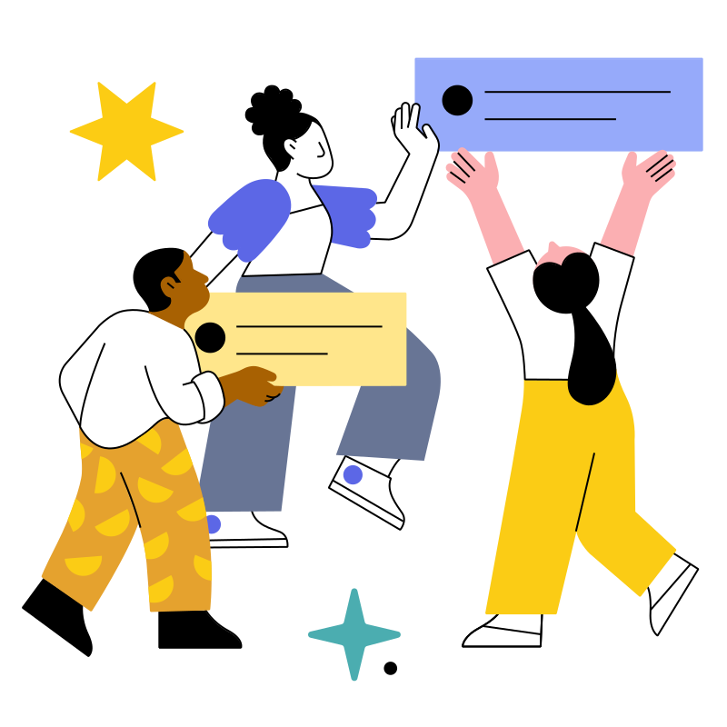
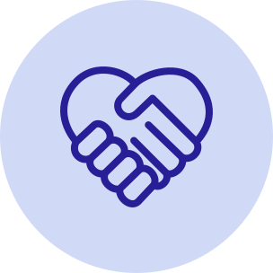
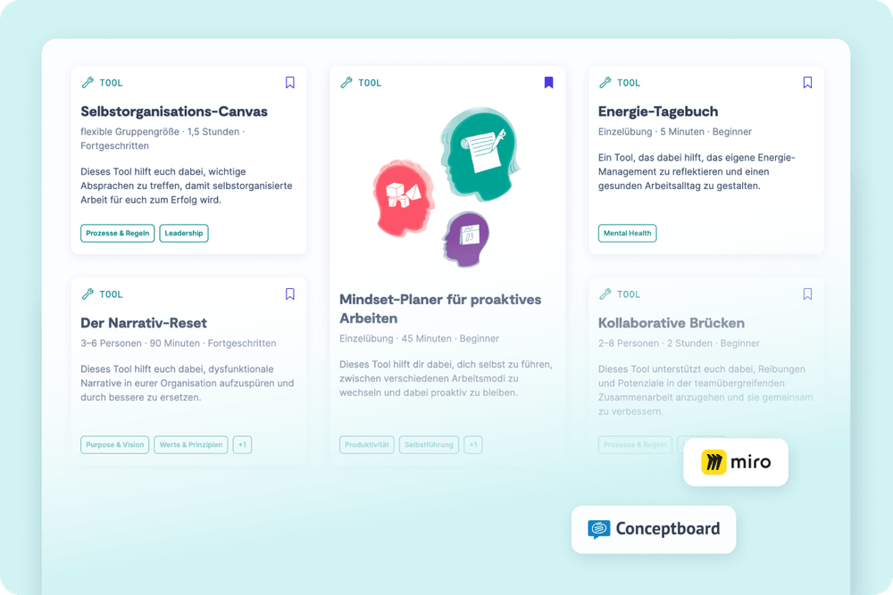
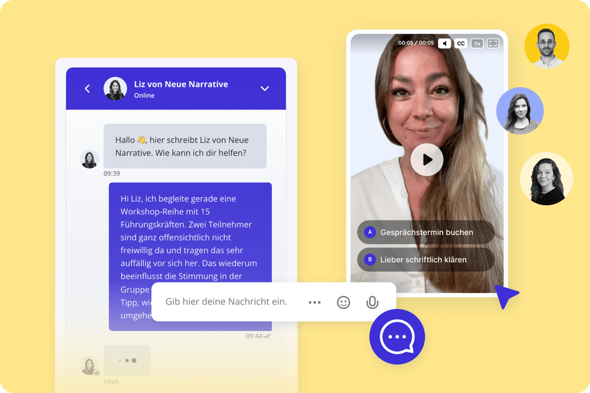
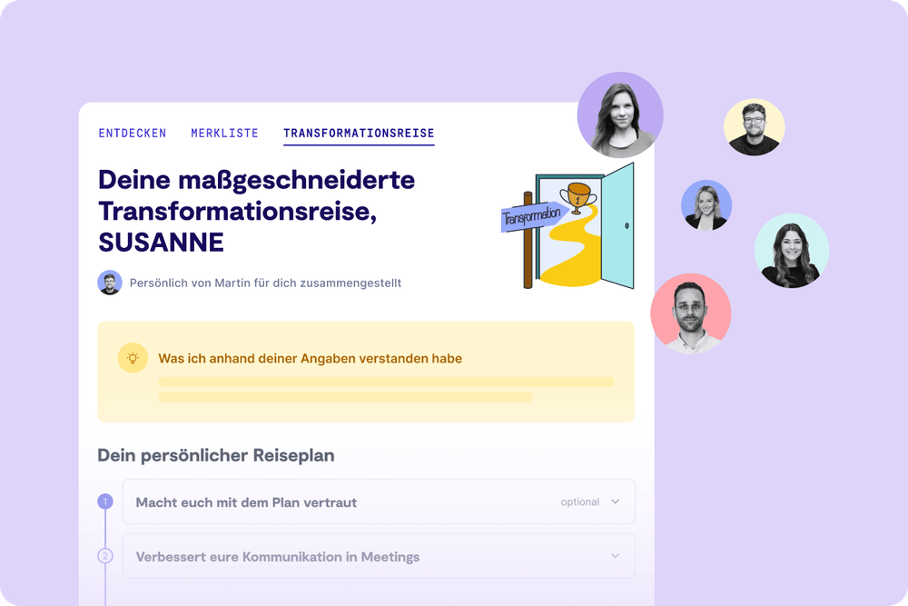
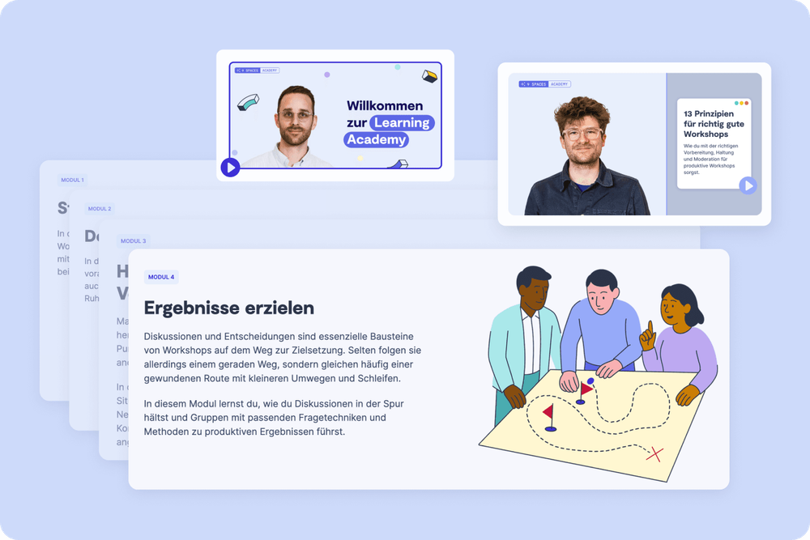

Solo
1 Zugang
299€
pro Jahr
zzgl. MwSt
Jährliche Abrechnung, jederzeit kündbar
Workshops, Prozess-Vorlagen, Learning Journeys, energetisiert mit Live-Beratung und KI. Alles in einem Produkt.
Diese Plattform wird betrieben und qualitätsgesichert von Neue Narrative – dem führenden New-Work-Magazin im DACH-Raum.

Mehr als 3.000 Führungskräfte, HR-Verantwortliche und Berater*innen gestalten die Arbeitswelt mit 9 Spaces

Für Führungskräfte, die ihr Team stärken wollen – aber nur wenig Zeit dafür haben. Formate, die in den stressigen Alltag passen und sofort wirken.
Für HR Professionals, die Weiterentwicklung skalierbar machen wollen. Eine Plattform, die Mitarbeitende befähigt, selbst aktiv zu werden, statt auf das nächste Training zu warten.
Für Coaches & Berater*innen, die weniger vorbereiten und mehr begleiten wollen. Fertige, erprobte Workshop-Vorlagen, die du in Minuten anpassen und direkt einsetzen kannst.
Workshops, Prozess-Abfolgen, Checklisten, Meeting-Formate und 1:1-Vorlagen, die schon bei hunderten Teams funktionieren. Inklusive Handouts, Tutorial-Videos und Whiteboard-Vorlagen.

Für manche Fragen braucht es mehr als ein gutes Tool. In der Live-Beratung sprichst und entwickelst du Lösungen mit unseren Orga-Expert*innen, die hunderte ähnliche Situationen kennen.

Beantworte 5 Fragen zu deiner Herausforderung, zurück kommt ein maßgeschneiderter Fahrplan für dich und dein Team. Innerhalb von 48 Stunden.

Die meisten Führungskräfte haben nie gelernt, wie man Gruppen moderiert. Unsere Academy ändert das: in 4 Modulen zum Moderationsprofi. Flexibel, in deinem Tempo, sofort anwendbar.


Viele der 4.500 Mitarbeiterinnen und Mitarbeiter von Lufthansa Technik stecken in Arbeitstagen mit Meeting-Endlosschleifen fest. Eine interne Community aus Facilitatoren soll das mithilfe von 9 Spaces ändern – und eine neue Meeting-Kultur etablieren.
Erfahre in Kürze, wie 9 Spaces funktioniert und entdecke alle Mehrwerte in der Feature-Übersicht.
zzgl. MwSt
Jährliche Abrechnung, jederzeit kündbar
Zugang für mehrere Mitarbeitende in einem maßgeschneiderten Plan

Lass uns darüber austauschen, wie dein Team oder deine Organisation das volle Potenzial von 9 Spaces ausschöpfen kann. Mit echten Beispielen aus anderen Organisationen.